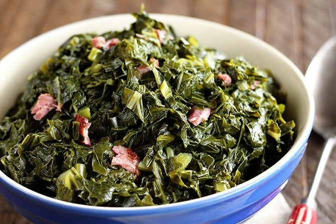

The South's favorite Meat

Fried Chicken has been known as Southern staple for many years. Both of my grandmothers used buttermilk as marinade along with seasoned flour and cornstarch added to a perfect crunch. Fried Chicken was always on the table every holiday andmost Sunday dinners. Those of you can relate to my upbringing the love of this tasty treat will be with us for a lifetime.
collard Greens:My Favorite Vegetable
Growing up I would watch my grandmother pick her collard greens after she would clean them with a little baking soda and tablespoon of viniger. Oce she was done she would fill the pot with hot water and place her greens in one bunch at a time. She would spend her time seasoning live them too cook for a few hours. While her greens were cooking she prepare her homemade conbread. The aroma from the greens and cornbreadd was always from kitchen to the porch. I miss those times so much.
My Favorite Side Dish

America let's be honest Southern Baked macarroni & cheese is not come from a box. My grandmother would assemble her favorite cheeses,heavy cream,and butter an magic would happen in the oven. The debate for years has been eggs or no eggs. My opinion noeggs. Between the creamiest and the crusty corners you are definitely coming back for more.
<